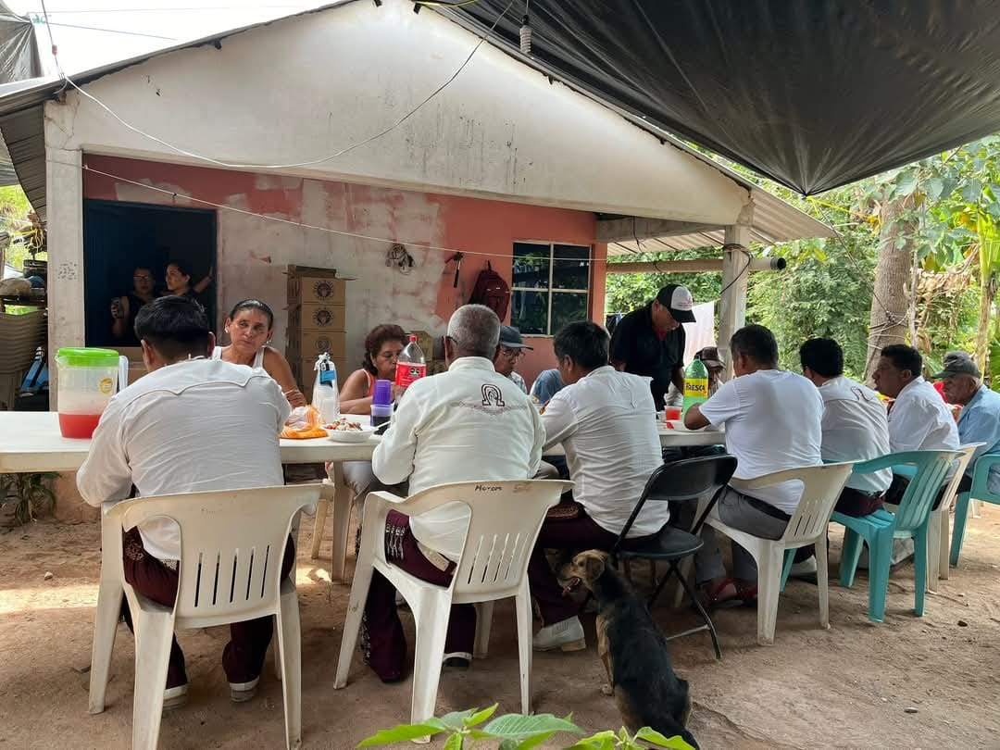
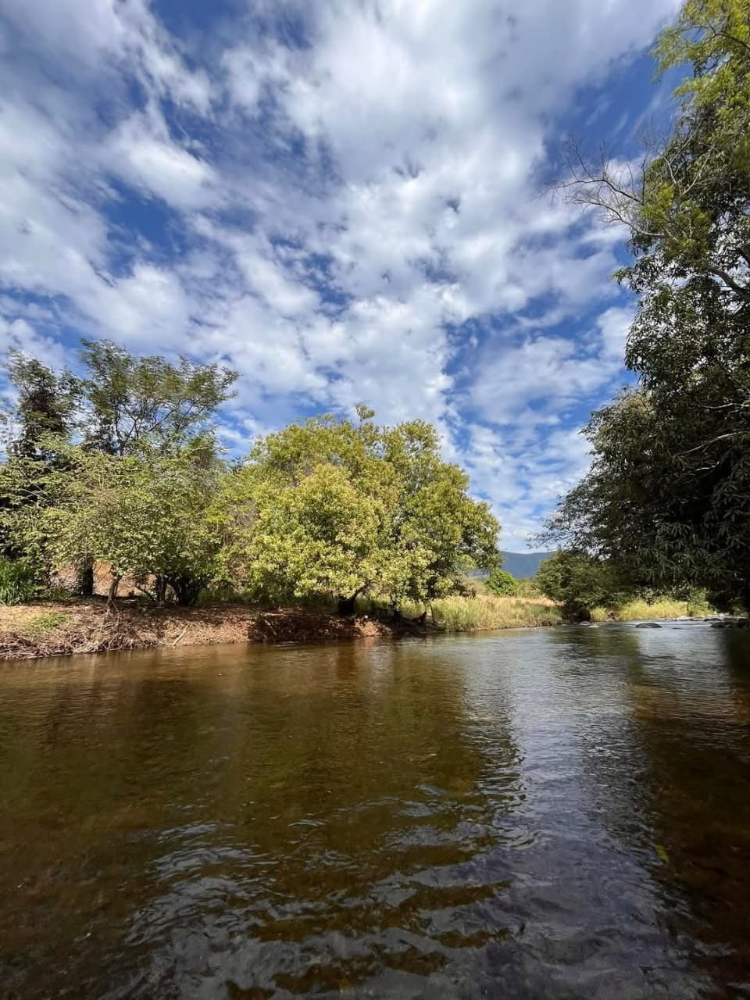
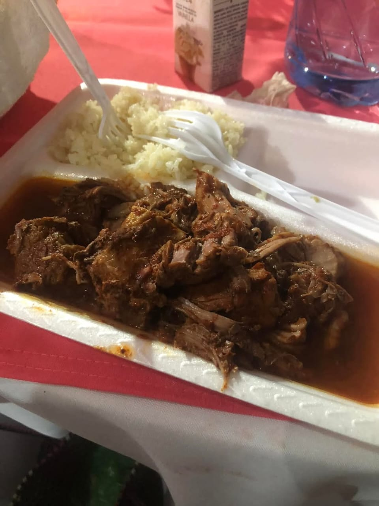

Noticia
Como noticia relevante, como se muestra en la imagen cuando una persona de la comunidad fallece los pobladores tienen la costumbre de acompañar a los familiares que sufren la perdida de su familiar
Flora
La flora de nuestra comunidad es muy hermosa ya que los pobladores han dismunuido considerablemente la contaminación, para poder aumentar el crecimiento de nueva Flora silvestre. Asi mismo entran las plantas comestibles que crecen en los cerros como rabo, hierba mora, quintonil, papanoquelite, chepile y otras variedades de plantas como flores hermosas que son muy escasas y ificiles de conseguir, son un pequeño lujo que se daban los pobladores, ya que eran plantas con flores muy hermosas distintivas de la comunidad.
Gastronomía
La gastronomía de nuestra comunidad se basa en platillos muy llamativos y deliciosos son platillos que preparan las señoras mas grandes de la comunidad apodadas "las mandonas" que preparan los siguientes platillos como son: Mole de pollo y de cerdo, barbacoa, caldo de res, frijol frito, pozole y tamales y de bebidas preparan aguas de sabor como jamiaca, orchata, sandia, mango entre otras variedades.
San Cristóbal es un pueblo muy arraigado a sus constumbres y tradiciones, como consecuencia se rige bajo usos y constumbres, teniendo en cuenta este dato San Cristobal es un pueblo muy agradable con habitantes tranquilos, respetuosos y amables que siempre extienden la mano para ayudar a quien lo necesite.